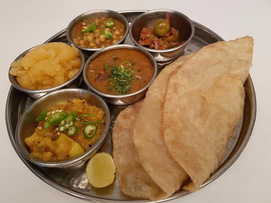

Halwa Puri Aur Cholay Ka Salan
Recipe by Chef Mah Rukh

Ingredients
Puri
Flour 2 cups(Makes about 20)
Oil 2 tsp
Oil for deep frying
Aloo Ki Bhujia
Meadium size potato 1
Salt to taste
Chili powder 1/2 tsp
Haldi powder 1/4 tsp
kalonji seeds 1/2 tsp
Aloo Ki Bhujia
Presoaked whole channa 1/2 cup
Salt to taste
Zeera powder 1/2 tsp
Haldi powder 1/4 tsp
Crushed whole dried red chilles 1/2 tsp
Halwa
Sujji (Semolina) 1 cup
Oil 2 tsp
Sugar 1-1/2 tsp
Water 1/2 cup
Seed of small illaichi 3
Yellow food color(Optional)
Instruction
Poori
Make the dough with flour and 2 tsp oil and water as needed.
Make into small puris (like pancake) as flat as you can and deep fry in hot oil.
Aloo Ki Bhujia
Cut the potatoes into small cubes
Add spices and 1 cup of water and leave on low heat.
When soft, smash lightly.
Cholay
Boil the channa with salt until soft.
In a poy heat 1lbs of oil.
Add spices and softened channa and 1/4 xup of water.
Mix and mash slightly.
Cook till bubbles appear then remove from heat.
Halwa
Put the sujji and oil in a pot along with illaichi seeds and fry until slightly brown on very low heat.
Meanwhile combine sugar and water to make a syrup
Add this to the sujji taking care not to burn yourself and cook on low heat to desire consistency.
If you want to color the halwa. Add the color to the syrup before pouring it into the sujji.